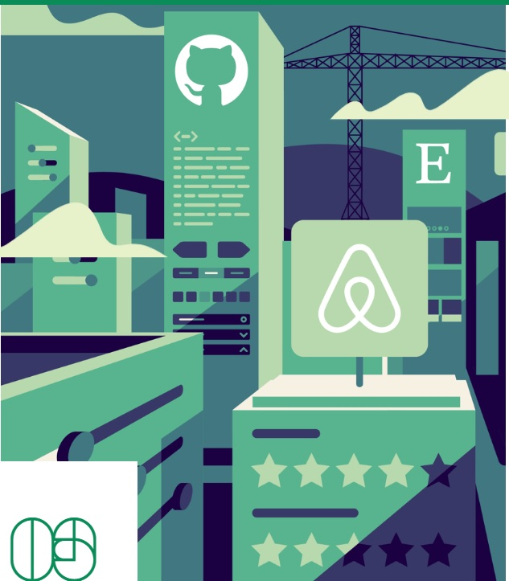

Introducing the best practices, stories, and insights from the world’s top design leaders. Loaded with in-depth books, podcasts, and more, DesignBetter.Co is your essential guide to building remarkable products and teams.
Scroll
The Design Better.Co Library
Build a strong design practice with our collection of definitive books. Dive in for deep knowledge or take a peek for a moment’s insight. Explore how the best companies approach product design, design thinking, design leadership, and more.
Enterprise Design Sprints
by Richard Banfield
A Design Sprint provides a simple, timeboxed problem-solving framework for product teams to get answers quickly and effectively. The exercises embedded in the five phases are designed to reduce politics, increase collaboration across functions and put the focus on answers (outcomes) and not just assets (outputs). Learn from enterprises like Home Depot, LearnVest, IBM, AARP, Fidelity Investments, Lidl, Blue Cross Blue Shield, and many more, how you can run, facilitate or sponsor your own design sprint and start delivering solutions in organizations of any size.
DesignOps Handbook
by Kate Battles
As companies mature and invest in design, they need to operationalize workflow, team coordination, and more. Learn how DesignOps help create integrated, high-functioning teams at the best companies in the world.

Design Systems Handbook
by Marco Suarez
A design system unites product teams around a common visual language. It reduces design debt, accelerates the design process, and builds bridges between teams working in concert to bring products to life. Learn how you can create your design system and help your team improve product quality while reducing design debt.
Design Leadership Handbook
by Aarron Walter and Eli Woolery
Transitioning to design leadership can be challenging for individual designers. These proven insights from design leaders will help you gain confidence as a leader—and the skills to build a first-class design team.
Design Thinking Handbook
by Eli Woolery
What is design thinking and how can it spread throughout an organization? Learn how design thinking can help your team and company bring insightful, user-driven solutions to even the thorniest challenges.
Principles of Product Design
by Aarron Walter
Product design is hard. Like any craft, there’s a lot to master to become a great product designer. These industry tested best practices will help you and your team design better products, faster.
About the Authors
Aarron Walter
As the VP of Design Education at InVision, Aarron Walter draws upon 15 years of experience running product teams and teaching design to help companies enact design best practices. Aarron founded the UX practice at MailChimp and helped grow the product from a few thousand users to more than 10 million.
He is the author of the best selling book Designing for Emotion from A Book Apart. You’ll find Aarron on Twitter and Medium sharing thoughts on design. Learn more at http://aarronwalter.com.
Eli Woolery
Eli is the Director of Design Education at InVision. His design career spans both physical and digital products, and he has worked with companies ranging from startups (his own and others) to Fortune 500 companies.
In addition to his background in product and industrial design, he has been a professional photographer and filmmaker. He teaches the senior capstone class Implementation to undergraduate Product Designers at Stanford University. You can find Eli on Twitter and Medium.